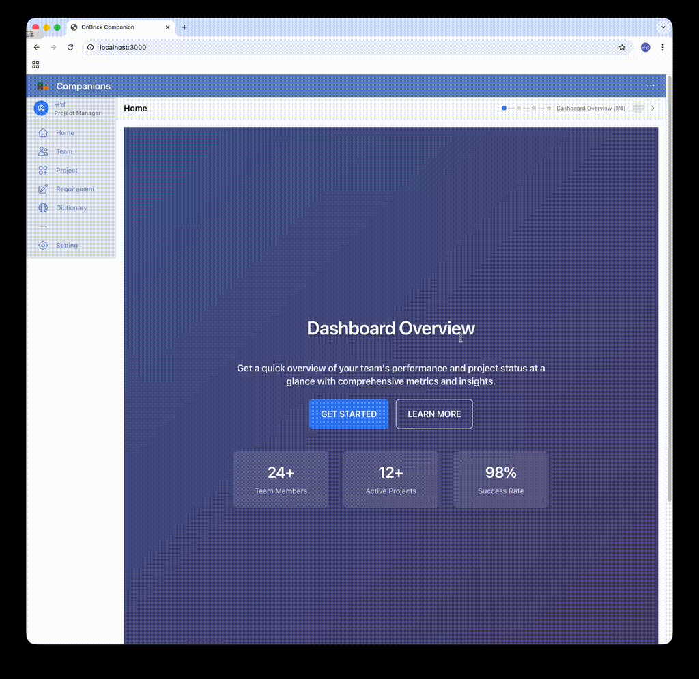

Companions
Svelte 5 기반 프로젝트 관리 대시보드 템플릿. 프로젝트 추적, 팀 협업, 요구사항 문서화, 기술 사전 등 실무에 바로 적용 가능한 기능들을 제공합니다.
즉시 사용 가능한 프로젝트 템플릿으로, 프로젝트 관리에 필요한 핵심 기능들이 모두 포함되어 있습니다. Docker 지원으로 간편한 배포가 가능하며, TypeScript와 Svelte 5의 최신 기능을 활용하여 견고하고 확장 가능한 구조로 설계되었습니다.
프로젝트 추적, 팀 협업 도구, 요구사항 문서화, 기술 사전 등의 기능을 통해 팀의 생산성을 높일 수 있습니다. 라이트/다크 테마 지원과 직관적인 UI로 편안한 사용 경험을 제공하며, Apache 2.0 라이선스로 자유롭게 사용 가능합니다.
GitHub